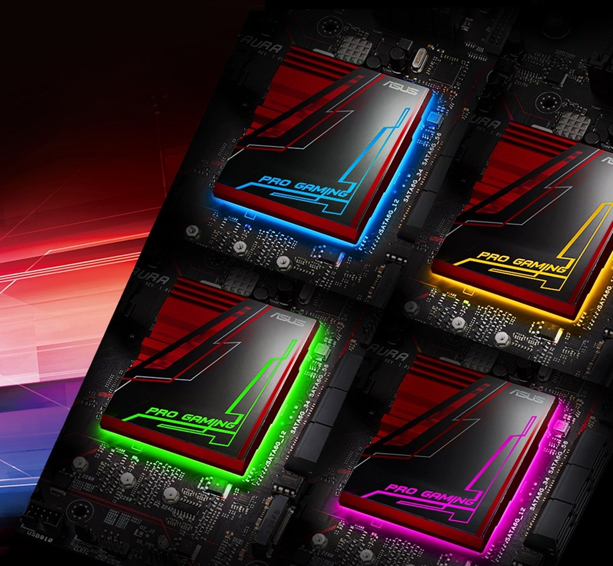
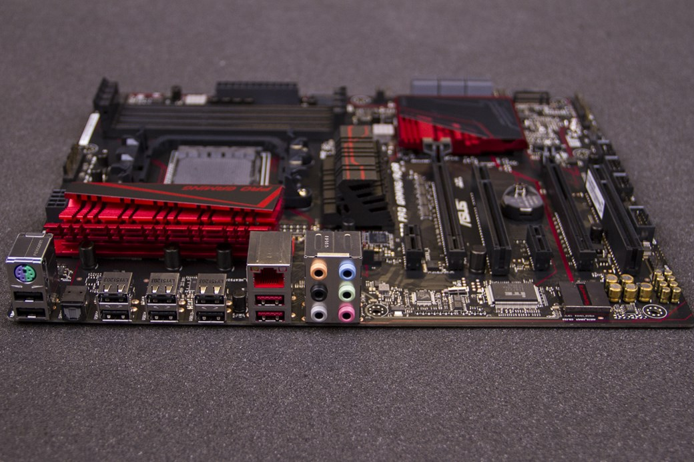

Review: placa-mãe ASUS 970 PRO GAMING/AURA
Bom, felizmente, a ASUS não abandonou os fãs da AMD, tanto que, agora, ela apresenta uma nova solução para gamers que buscam uma placa-mãe atualizada tanto em questão de design quanto em funcionalidade. A 970 PRO GAMING/AURA vem com um chipset mais modesto, mas isso não quer dizer que ela não esteja preparada para entregar alta performance.
É importante ressaltar de antemão que esta placa suporta os processadores mais novos da AMD, vem com o novo padrão USB 3.1, tem espaço para múltiplas placas de vídeo (em configurações SLI e CrossFire), utiliza peças robustas (que visam dar um bom diferencial em desempenho) e, claro, ainda apresenta design diferenciado com sistema de LEDs RGB.
Especificações
Design
A placa-mãe nem sempre foi um componente valorizado por seu design, principalmente porque, salvo modelos limitados, as fabricantes dificilmente faziam investimentos na parte visual desses produtos. Acontece que os tempos mudaram e, recentemente, houve uma evolução perceptível nesse sentido com a chegada de componentes mais atraentes.
Hoje, já temos placas com slots personalizados, dissipadores robustos e repletos de incrementos e uma série de outros retoques que pretendem conquistar o consumidor mais exigente. Já faz algum tempo que a ASUS percebeu esse movimento e vem fazendo ajustes pontuais em determinados produtos.
A nova placa com arquitetura Pascal traz um corpo de alumínio elegante, com retas marcantes, dissipador de porte avantajado e sistema de refrigeração robusto. Equipada com cooler do tipo blower, ela promete excelência ao rodar com temperaturas elevadas, emitindo poucos ruídos provenientes da pequena ventoinha.
Todavia, o grande diferencial deste modelo é o sistema de retroiluminação no chipset. O nome AURA foi utilizado justamente para indicar essa qualidade única do produto. Ao ligar a placa-mãe pela primeira vez, ficamos impressionados com o show de luzes no componente. Um esquema de LEDs garante a transição entre várias cores, deixando o PC todo colorido.
Na parte traseira, próximo ao painel de conexões, a ASUS optou por um sistema de luzes mais simples, que acende apenas na cor vermelha. A escolha da cor aqui é óbvia, afinal todos os demais elementos na placa acabam combinando com a iluminação na parte de trás.
Bom, vale menção também o capricho que a ASUS teve na construção desta placa. Ela não chega a ser tão robusta quanto os modelos mais premium da marca, mas é válido enfatizar que temos aqui uma peça de alta qualidade, que já é voltada ao segmento gamer.
GeForce GTX 1080
A GeForce GTX 1080 é a primeira com a arquitetura Pascal, sendo a placa ideal para demonstrar todo o poder que a nova série de chips da NVIDIA pode entregar ao jogador. Ela chega como a evolução da GeForce GTX 980 e se apresenta extremamente eficiente em desempenho e energia.
Além da tecnologia de construção de 16 nanômetros, a fabricante foi capaz de incluir mais transistores no processador, programar os componentes para trabalhar com frequências ainda mais elevadas e entregar desempenho bruto muito superior aumentando somente 15 watts no TDP (a GTX 980 trabalhava com 165 watts, enquanto a GTX 1080 opera com 180 watts).
De acordo com a NVIDIA, temos aqui a GPU mais avançada do planeta. Preparada para a próxima geração do DirectX 12 e dos jogos desenvolvidos com a API Vulkan, a GTX 1080 promete ser adequada para jogos com realidade virtual, resolução 4K, displays compatíveis com HDR e muitos outros recursos visuais que vão entregar um novo mundo aos gamers.
Na versão padrão da GTX 1080, a NVIDIA fez uma atualização no sistema de energia. A nova placa da fabricante vem com um sistema de 5 fases dual-FET, que garante balanceamento na distribuição de energia pelo PCB e sistema acústico eficiente. O resultado é uma melhoria no uso de energia que é até 6% superior ao da GTX 980. O ruído na tensão de pico a pico foi reduzido de 209 mV para 120 mV, o que garante melhores overclockings.
Memória GDDR5X
Outra coisa que ajuda muito a aumentar o desempenho da GTX 1080 é a tecnologia de memória GDDR5X. Trata-se da evolução do padrão GDDR5, que recebeu uma série de melhorias internas para entregar ainda mais performance, sem precisar alterar completamente o projeto de funcionamento.
Com interface de 256 bits e capacidade de transferência de até 10 gigabits por segundo, os módulos instalados na GeForce GTX 1080 conseguem alcançar desempenho até 43% superior ao que era possível na GTX 980. Considerando ainda os ganhos de trabalho da arquitetura Pascal, a GTX 1080 entrega até 70% mais performance que a GTX 980.
Compressão de memória
Conforme documento oficial da NVIDIA, o subsistema de memória da GeForce GTX 1080 usa técnicas de compressão de memória sem perda de qualidade para reduzir as demandas de largura de banda da memória RAM.
Com esse tipo de funcionalidade, a placa de vídeo consegue reduzir a quantidade de dados escritos na memória, diminuir as informações transferidas para a memória cache L2 e também moderar o montante nas transferências entre as unidades de textura e o buffer.
A GTX 1080 conta com vários algoritmos que determinam de forma inteligente como os dados devem ser comprimidos. Um desses recursos é o delta color, que calcula as diferenças entre os pixels em um bloco e armazena somente referências, podendo reduzir os dados até pela metade.
Founders Edition
Costumeiramente, antes de os chips gráficos chegarem às montadoras, eles são demonstrados em placas de referência (também conhecidas como Stock Edition). Antigamente, esses modelos eram fabricados somente para as primeiras análises, sendo que apenas parceiros e veículos de tecnologia conseguiam acesso a tais peças.
"A Founders Edition é uma placa produzida pelos engenheiros da NVIDIA com componentes da mais alta qualidade"
Acontece que, ao perceber o grande volume de consumidores que tinha interesse no projeto original, a NVIDIA resolveu lançar uma versão para os gamers que pretendem usar a placa de referência em seus computadores. A GTX 1080 Founders Edition foi produzida pelos engenheiros da NVIDIA com materiais e componentes da mais alta qualidade.
O desenho especial desta versão garante alto desempenho gráfico, performance energética de ponta e funcionamento exemplar com temperaturas dentro do adequado para o máximo proveito. A Founders Edition é uma série limitada, e seu preço é até mais elevado do que o das placas de outras marcas.
Vale a pena?
Em todos os jogos analisados, a GeForce GTX 1080 foi melhor do que todas as placas que já testamos. Ela passa a GTX 980 Ti, a TITAN X e até as placas da AMD. Em comparação com a GTX 980, ela consegue quase 50% a mais de performance, o que é bastante surpreendente.
A NVIDIA vende a GTX 1080 como uma placa perfeita para 4K e realidade virtual, mas a gente percebeu que esse modelo é a melhor solução do mundo para jogos em Full HD. Ele roda games como Shadow of Mordor e Batman Arkham Knight acima de 144 frames por segundo, o que é ideal para usar em monitores com taxa de atualização de 144 Hertz.
Em outros jogos, como GTA V e Rise of the Tomb Raider, a GTX 1080 também mandou muito bem e rodou com visuais perfeitos acima de 60 frames por segundo. É de ficar de queixo caído com tamanha qualidade.
Mesmo na resolução 4K, a GTX 1080 dá um show em desempenho, ainda que nem todos os games fiquem acima dos 30 frames por segundo (o que vai contra as informações que a NVIDIA deu no anúncio no produto). De qualquer forma, ela roda F1 2015, Batman e GRID Autosport na qualidade máxima e quase chega aos 60 frames por segundo.
Todos esses números de performance apenas comprovam que a GTX 1080 é o projeto mais robusto de chip gráfico que a NVIDIA já construiu. A nova arquitetura Pascal se mostra eficiente tanto em desempenho gráfico quanto em consumo de energia.
...
A boa notícia é que você pode comprar a sua GTX 1080 a partir do fim de maio. A má notícia é que ela custa quase 4 mil reais. Pode parecer um valor elevado, mas o preço está ótimo se a gente considerar que ela supera a GTX 980 Ti, gasta menos energia, está pronta para o futuro e ainda custa menos.
No fim das contas, este é o melhor projeto que a NVIDIA já desenvolveu e nós recomendamos muito a compra. Trata-se de uma placa muito bonita, eficiente, econômica e robusta para todas as ocasiões. Parabéns para toda a equipe da NVIDIA, vocês conseguiram novamente!
A GeForce GTX 1080 foi cedida pela NVIDIA para a realização desta análise.
Anúncios

Mais Lidas da Semana
-

Curiosidades sobre celulares
Sabe esse aparelho que deve estar na sua mão agora? Então, ele é um celular e com certeza você já sabe disso. Mas você conhece um pouquinho da história desse aparelho? Leia mais »
-

Como usar Whats App no PC
Uma das últimas novidades que o WhatsApp esta oferecendo aos seus usuarios foi o WhatsApp Web. Acesse WhatsApp desde o seu computador agora... Leia mais »
-

PC X Console
Por muitos anos a indústria de jogos para videogame e computadores andou lado a lado, dividindo a atenção dos usuários de acordo com suas preferências... Leia mais »